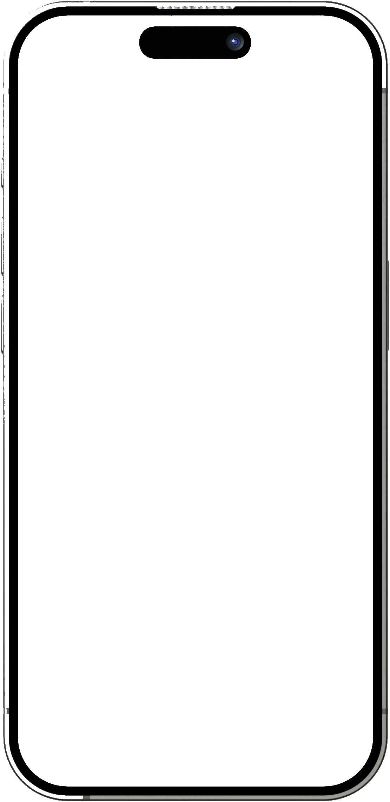

Short-form video, hooks, and performance.
I'd always posted for fun, but wanted to understand what actually makes people stop scrolling. So I leaned into content I could speak to honestly: lifestyle, creativity, travel, the relatable chaos of being a fresh grad. I aim to make people feel seen, understood, and inspired.

My top reel statistics
Screenshots from my Instagram Reel insights. Watch time and follows tell a different story from views alone, which is where the iteration decisions come from.
Top reel: 150.9K views, 8s average watch time, 176 follows.
Vlog: 78K views, 13s average watch time, 55 follows.
Intro reel: 14.9K views, 6s average watch time, 10 follows.
I make content with intention as I aim to build a community that inspires people. I learned how lighting, scripting, intent, and hooks worked together, then tied everything together keeping my target audience in mind. With a shift in my strategy, I was able to hone in on my audience and increase long-term engagement. My community is just starting, but is growing positively and I'm excited to continue to learn and build valuable assets.